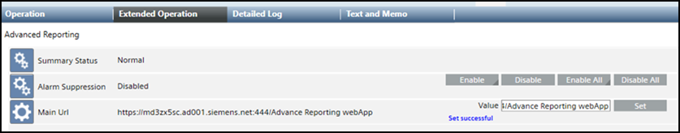
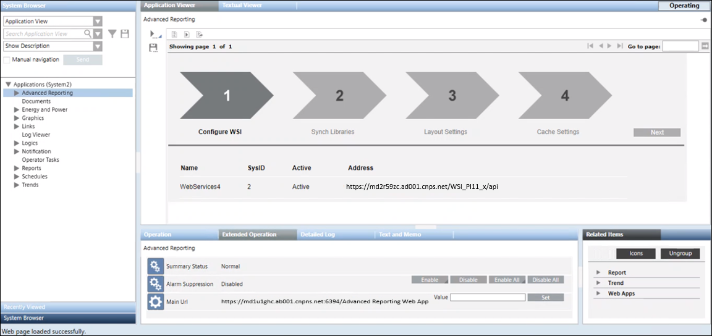

Configure the Main URL for Advanced Reporting
- In the System Management Console (SMC) proceed as follows:
a. In the SMC tree, select the Advanced Reporting web application, if not already selected.
b. From the Web Application Details expander, click Copy URL to copy the URL for Advanced Reporting web application:
https://[Fully qualified host name of the Tomcat server]:[Port Number]/[Advanced Reporting web application name] - In the SMC tree, select the Server project.
- In the toolbar, click Start
 .
. - Logon to the Desigo CC Client application.
- In System Browser, select Application View.
- Select Applications > Advanced Reporting.
- In the Extended Operation tab, in the Main URL Value text box, paste the copied https URL and click Set.
- The Main URL is configured.

- In the Application Viewer tab, click the link for Configuration Page.
- The wizard on the Configuration Page - Advanced Reporting displays.
If the configuration page does not display, it means that either the Main URL is not configured properly or the Tomcat Server cannot be reached or has stopped.
Alternatively, the Default Web Client, internally used for accessing the advanced reports, restricts the access rights. For more information, see No Access to View Reports.
